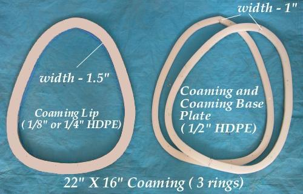
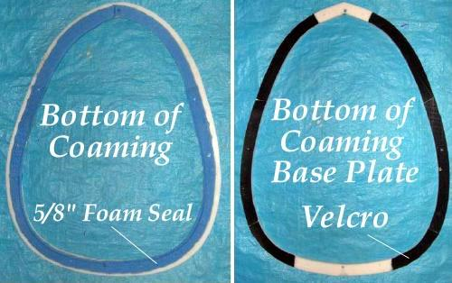

| HDPE Coaming (2 of 4) | Menu Previous Page Next Page |
|

 |
Foam Seal - After cutting out the rings, a 5/8" closed cell foam seal is fitted. Use double sided tape or contact cement to attach the foam to the coaming. Velcro - Attach Velcro ( self-adhesive) to the bottom of the coaming base plate. The Velcro is used to attach the skin to the coaming. This is covered in greater detail in the PVC skinning section. Self adhesive Velcro is no longer recommended with HDPE or PVC.
Note: The same procedures above are followed when using a plywood coaming /
base plate. HDPE has proven to be the least watertight of the several coamings listed in this section. By using a wood or fiberglass coaming, the Velcro can be glued to the inside rim (unlike HDPE which cannot be glued), or atop the lip, making for a more watertight seal than the HDPE coaming which is sealed with a foam gasket. If using plywood with an inside Velcro to skin attachment, only the coaming ( 3/4") and lip (wood if glued) or (screwed if HDPE) are required. No baseplate is necessary as is the case with an HDPE coaming.
|